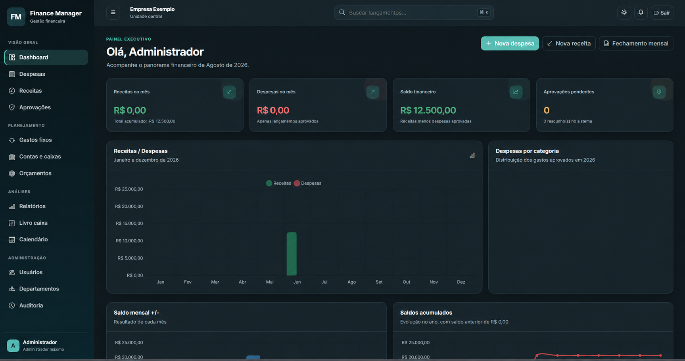
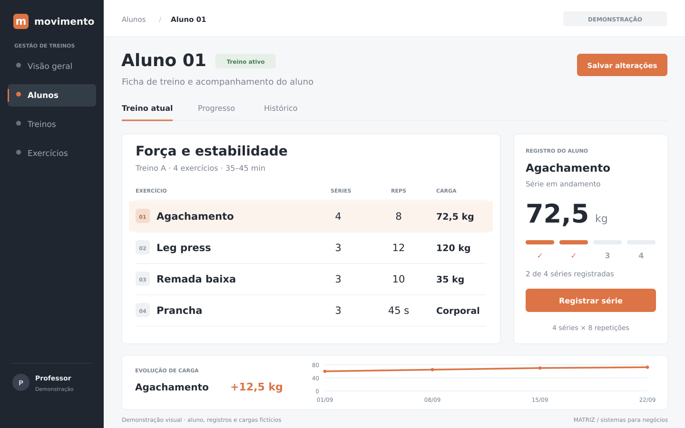
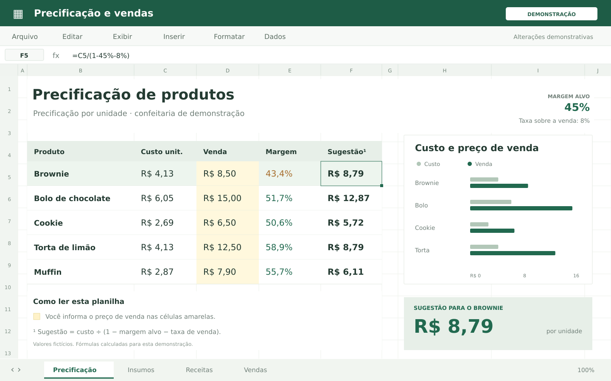

Sistema financeiro
Reúna receitas, despesas, contas e relatórios para acompanhar o dinheiro do seu negócio.
Ver detalhesTecnologia para pequenos negócios
Sua marca na internet e sua operação mais organizada, com soluções feitas para a sua rotina.

Reúna receitas, despesas, contas e relatórios para acompanhar o dinheiro do seu negócio.
Ver detalhes
Apresente sua marca, produtos e serviços em um site pensado para quem visita pelo celular ou computador.
Ver detalhes
Organize clientes, agenda e processos em sistemas para academias, barbearias e outros negócios.
Ver detalhes
Controle gastos, vendas, custos e preços com planilhas organizadas para a sua rotina.
Ver detalhesTráfego pago · Google Ads
Gestão de anúncios no Google Ads, com foco na sua região e acompanhamento das conversões.
Gestão mensal sob proposta. A verba dos anúncios é separada e paga diretamente ao Google.
Entendemos sua necessidade e o que tem prioridade.
Você conhece a entrega, o prazo e o investimento.
Você acompanha as etapas e recebe orientação para usar.
Quem conversa com você
À frente da MATRIZ
O orçamento depende do que você precisa. A proposta separa o valor do projeto dos custos recorrentes, como domínio, hospedagem e manutenção.
Eles mostram projetos e demonstrações em diferentes estágios, identificados em cada página. A entrega para o seu negócio é definida na proposta.
As condições de suporte, orientação de uso e manutenção ficam registradas na proposta. Novas funcionalidades são combinadas à parte.
Conte o que seu negócio precisa. Você recebe uma proposta antes de contratar.